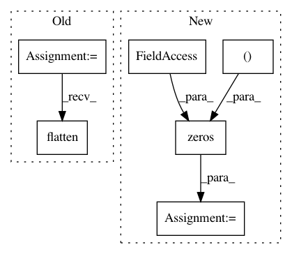

84dd314904ba2004ab35bbea65c5f2cb684e073c,autosklearn/estimators.py,AutoSklearnClassifier,predict,#AutoSklearnClassifier#Any#,273
Before Change
if self._n_outputs == 1:
predicted_indexes = predicted_indexes.reshape((len(X), 1))
predicted_classes = []
for k in six.moves.range(self._n_outputs):
output_predicted_indexes = predicted_indexes[:, k]
output_predicted_classes = self._classes[k].take(output_predicted_indexes)
predicted_classes.append(output_predicted_classes)
prediction = np.vstack(predicted_classes)
if self._n_outputs > 1:
prediction = prediction.transpose()
else:
prediction = prediction.flatten()
return prediction
def predict_proba(self, X):
After Change
return predicted_classes
else:
n_samples = predicted_indexes.shape[0]
predicted_classes = np.zeros((n_samples, self._n_outputs), dtype=object)
for k in six.moves.range(self._n_outputs):
output_predicted_indexes = predicted_indexes[:, k]
predicted_classes[:, k] = self._classes[k].take(output_predicted_indexes)
In pattern: SUPERPATTERN
Frequency: 3
Non-data size: 6
Instances
Project Name: automl/auto-sklearn
Commit Name: 84dd314904ba2004ab35bbea65c5f2cb684e073c
Time: 2016-02-24
Author: a.domashnev@gmail.com
File Name: autosklearn/estimators.py
Class Name: AutoSklearnClassifier
Method Name: predict
Project Name: pymc-devs/pymc3
Commit Name: d6a2e55cea7640cf6ab1250bbaba66dd79a7ee85
Time: 2017-09-02
Author: maxim.v.kochurov@gmail.com
File Name: pymc3/theanof.py
Class Name: BatchedDiag
Method Name: perform
Project Name: mil-tokyo/webdnn
Commit Name: 24bf232753b4b34b6d4164d5a647dd17d16348b2
Time: 2017-05-23
Author: hidaka@mi.t.u-tokyo.ac.jp
File Name: example/convert_resnet/convert.py
Class Name:
Method Name: main